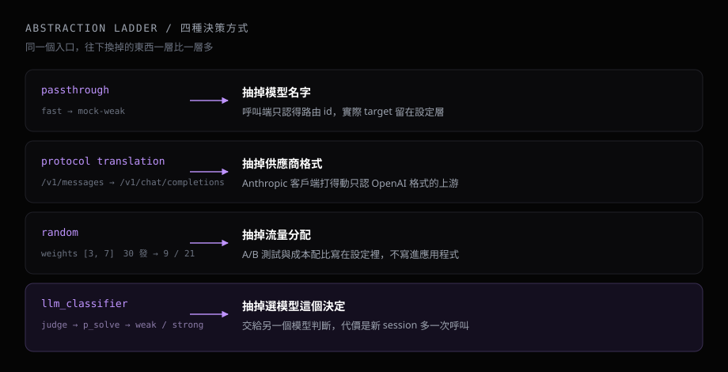
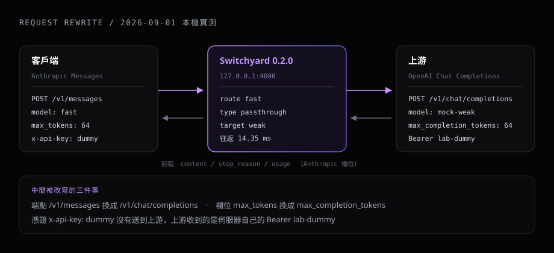
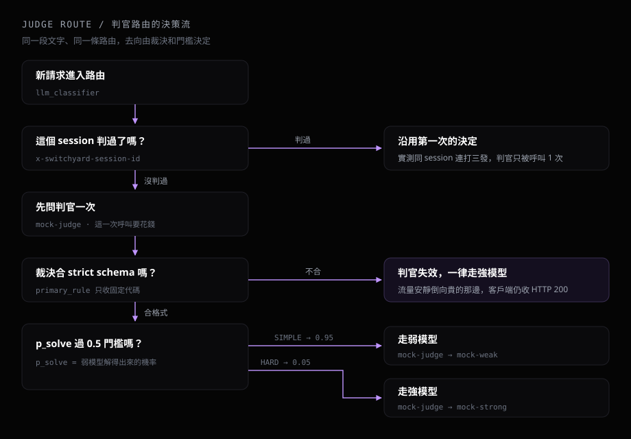

NVIDIA 在 NeMo 底下放了一個 Rust 專案叫 Switchyard，做的事情很直白：把 LLM 請求接進來，再決定實際交給哪個模型。
README 說得再清楚，有一個問題它回答不了：它到底替我改了什麼。請求送進去、答案吐回來，中間那段是黑的。
所以這次上游沒有接真的模型。接真的模型看得到回答，看不到中間發生什麼。我在本機架了一支假的上游伺服器，讓 Switchyard 把每一筆送出去的 HTTP 請求原樣留下來，然後逐筆打開看。
# 我測的其實是四種決策方式
官方文件把部署拆成三層：llm_clients 是怎麼找到供應商，targets 是供應商裡的哪個模型，routes 是使用者看到什麼、以及怎麼決定 target。文件裡有一句話講得很直白：“Strong, weak, capable, and efficient are roles within an algorithm, not fixed properties of a model”——強和弱是演算法裡的角色，同一個模型在不同路由可以扮演不同角色。
換句話說，我這次測的不是四個模型，是四種決策方式。它們疊起來剛好是一道階梯，每往下一階，被抽掉的東西就多一層。

# 在 Windows 上編譯，卡了三層
安裝指令官方只寫一行 cargo install --locked switchyard-server，實際跑完花了三輪：Rust 版本不足（it requires rustc 1.96.1 or newer, while the currently active rustc version is 1.94.0）、gnu toolchain 的連結工具鏈不完整（error calling dlltool: program not found，補進 PATH 之後換成 dlltool 找不到 GNU assembler）、TLS 相依 aws-lc-sys 要編一段 C 程式碼而本機缺 gcc。用 MSYS2 補上 binutils 與 gcc 之後，release 編譯 4 分 00 秒跑完，執行檔 34.8 MB。
同樣在 Windows 上要跑的話，真正值得先確認的是第一關：rustup update stable 更新的是預設 host 那套，我本機預設是 gnu，跑完版本仍然停在 1.94.0，要指名 rustup update stable-x86_64-pc-windows-gnu 才動得到。先看清楚目前啟用的是哪一個 toolchain，比直接更新有用。
# 上游是一支會把證據留下來的假伺服器
假伺服器是 108 行的 Python，行為只有兩件事：把收到的路徑、標頭、body 原樣寫進 requests.jsonl，再回一個合法的 OpenAI 回應，內容是 PONG from <model>。設定裡兩個 target 分別叫 mock-weak 和 mock-strong，回答帶著自己的名字，於是從回覆就能直接讀出這一發被送去哪裡。
| 機制 | 想知道的事 | 本次實測觀察 |
|---|---|---|
| passthrough | 上游收到的模型名是誰 | fast → mock-weak |
| 協定轉換 | Anthropic 進去，上游收到什麼 | 收到 OpenAI 格式 |
| random | 權重 3:7 打出來的分布 | 30 發 → 9 比 21 |
| llm_classifier | 判官的裁決會不會改變去向 | 簡單題走弱、難題走強 |
# 一、路由名和真正的模型可以完全分開
想知道的是：客戶端看到的 fast，是不是上游真正的模型名字。設定裡開一條 passthrough 路由，id 叫 fast，指向 target weak。
客戶端送 model: fast，HTTP 200，往返 3.85 ms；假伺服器那頭記到的 model 是 mock-weak。GET /v1/models 列出來的也是路由名。
意思是在這個配置下，呼叫端不需要知道實際 target 是誰，更換 target 可以留在 Switchyard 的設定層處理。官方文件另外提醒它沒有自動探索上游型錄，要露出幾個模型就得寫幾條 passthrough 路由。
# 二、Anthropic 進去，OpenAI 出來，Anthropic 回來
想知道的是：格式不合的兩端接在一起，中間哪些欄位被動過。客戶端打 Anthropic Messages 端點 POST /v1/messages，body 帶 Anthropic 的 max_tokens，標頭帶 anthropic-version 和 x-api-key；上游那台假伺服器只認 OpenAI 格式。

PATH: /v1/chat/completions
HEADERS:
{
"content-type": "application/json",
"authorization": "Bearer lab-dummy"
}
BODY:
{
"max_completion_tokens": 64,
"messages": [
{ "content": "hello from anthropic client", "role": "user" }
],
"model": "mock-weak"
}
端點換成 /v1/chat/completions，Anthropic 的 max_tokens 翻成 OpenAI 的 max_completion_tokens。客戶端那頭收回來的是這個，全程往返 14.35 ms：
{
"type": "message",
"role": "assistant",
"id": "chatcmpl-mock3",
"model": "mock-weak",
"content": [
{ "type": "text", "text": "PONG from mock-weak (seq 3)" }
],
"stop_reason": "end_turn",
"stop_sequence": null,
"usage": { "input_tokens": 11, "output_tokens": 7 }
}
順帶看到一件跟憑證有關的事。客戶端送的 x-api-key: dummy 沒有出現在上游收到的標頭裡，上游拿到的是 Bearer lab-dummy，也就是 TOML 的 api_key_env 指定的那把鑰匙。呼叫端的憑證留在呼叫端，上游只看得到伺服器自己的憑證。文件另外提供 forward_auth = true 把來電者的憑證轉發上去，預設關著。
# 三、3:7 的分流，這 30 發打出 9 比 21
想知道的是：設定寫的權重，在實際流量上長什麼樣。random 路由設 targets = [strong, weak]、weights = [3, 7]、seed = 42。權重不必加起來等於 1，官方說明會把 3:7 當成 30% 對 70%。
連打 30 發，假伺服器接到 mock-strong 9 次、mock-weak 21 次，proxy 的 /v1/stats 給的比例是 28.13% 對 71.88%（分母是含前兩發單獨測試的 32 個請求，0 錯誤）。30 次樣本只夠說這次的分布與設定一致，官方文件自己也寫了短時間的執行未必吻合設定比例。往返延遲平均 7.12 ms、中位數 2.2 ms、最大 24.77 ms，這組數字量的是本機到本機，用來確認它有沒有加上明顯的固定開銷，拿去推估接真模型的表現並不成立。
開了 --routing-log-file 之後，32 個請求各留下一行決策記錄：
{"ts": "2026-09-01T00:01:38.543Z", "task": null, "trial_id": null,
"session_id": null, "model": "mock-weak", "tier": "",
"prompt_tokens": 11, "cached_tokens": 0, "cache_creation_tokens": 0,
"completion_tokens": 7, "reasoning_tokens": 0, "total_tokens": 18}
每一發打了哪個模型、花掉多少 token 都留在檔案裡，事後要算成本或核對分流比例都從這裡讀。tier 這欄在 random 路由下是空字串，欄位本身是留給有強弱分層的演算法用的。
# 四、讓一個模型決定該用哪個模型
想知道的是：判官的裁決會不會真的改變請求的去向。llm_classifier 的做法是先問一次判官模型：這題弱模型做得完嗎？判官回一份結構化裁決，其中 p_solve 是弱模型解得出來的機率，門檻預設 0.5，過了走弱，沒過走強。
我讓假伺服器兼任判官：使用者訊息開頭是 SIMPLE 就回 p_solve 0.95，是 HARD 就回 0.05。上游收到的呼叫順序分別是 mock-judge → mock-weak 和 mock-judge → mock-strong。同一段文字、同一條路由，換掉的只有判官給的數字，去向就跟著換。

# 判官答得不合格式的時候，它退回強模型
第一版假判官回的 primary_rule 我隨手寫成 lab-rule-hard，結果兩種題目全部被送去 strong。翻出它送給判官的那筆請求才看到原因：裡面帶了一份 strict JSON schema，primary_rule 只收固定幾個代碼。
required: ["crux", "primary_rule", "capability_boundary", "p_solve"]
p_solve: number, 0.0 – 1.0
primary_rule: ["SUP-1","SUP-2","SUP-3","SUP-4","SUP-5",
"UNC-1","UNC-2","LIM-1","LIM-2","none"]
// 改成合法代碼之後，HARD 那發假判官回的裁決
{
"p_solve": 0.05,
"capability_boundary": "unsupported",
"primary_rule": "LIM-1",
"crux": "multi-step reasoning"
}裁決不合格式就當判官失效，一律退回強模型，這跟官方文件寫的 fallback 行為一致。從可靠性看是對的選擇，代價是判官那端一出問題，流量會安靜地全部倒向貴的那邊，而客戶端收到的仍然是 HTTP 200。
# 判官本身也是一次模型呼叫
判官那筆請求有兩則訊息：一則是 Switchyard 自己組的 system 能力卡，開頭寫 “You are a task-level probability forecaster for a model router”，一則是使用者的原始提問，max_completion_tokens 開到 4096。這一次呼叫要花錢。
後續會不會每一發都再問一次，我用同一個 x-switchyard-session-id 連打三發實測：
第 1 發 mock-judge → mock-weak 回覆來自 mock-weak
第 2 發 mock-weak 回覆來自 mock-weak
第 3 發 mock-weak 回覆來自 mock-weak
三發之中判官被呼叫 1 次
所以成本落在新的 session 上：需要分類的第一發至少多一次模型呼叫，同一個 session 之後的請求沿用第一次的決定。要不要在每個使用者回合重新判斷，官方由 classify_trigger 控制，文件列的預設值是 every_request——那個設定下每一發都會多一次判官呼叫。
# 兩個和文件對不上的地方
官方 getting_started 和 llm_classifier 兩份文件的範例都寫 classify_trigger = "new_session"，我手上這顆 v0.2.0 執行檔不吃：unknown field classify_trigger，錯誤訊息把它認得的欄位全列出來，功能對應的那個叫 session_affinity，改掉才通過驗證。準確地說，是那兩份文件的設定範例與 v0.2.0 原生 llm_classifier 的 schema 不一致。
另一個是判官 schema 的嚴格程度。文件把 primary_rule 描述成「決定邊界的那條能力卡規則」，讀起來像自由文字，實際是封閉的 enum。要接自己訓練的判官模型，這份 schema 得先看過一遍。
repo 首頁自己標的階段是 pre-alpha，預告 v1.0 之前 API 還會大改。上面這兩點對得上這個階段。
# 所以這代表什麼
跑完這四組，我會把 Switchyard 理解成三件事。它是格式轉換層，同一條路由可以同時對 OpenAI 與 Anthropic 客戶端露出，上游要什麼格式是它的事。它是模型選擇層，random 把流量配比從程式碼搬進設定檔，llm_classifier 更進一步，把「這題該用哪個模型」交給另一個模型判斷。它還不是可以直接丟進正式環境的黑盒，v0.2.0 仍在 pre-alpha，文件與實際 schema 已經出現落差，判官失效時的 fallback 會安靜地改變成本結構。
真正值得記住的是最後這件事。以前選模型是寫在程式裡的一個常數，現在它變成一層有設定、有記錄檔、有失敗模式、也會自己花錢的系統。既然是系統，就該被觀測和驗證——這次我做的事情，其實就是拿一個宣稱會 routing 的黑盒，逐項確認它怎麼改請求、怎麼選模型、以及怎麼失敗。
# 技術環境
switchyard-server 0.2.0（Apache 2.0）、rustc 1.98.0、cargo 1.98.0、Windows 11 Home 26200，gnu toolchain 搭 MSYS2 的 binutils 與 gcc。上游假伺服器用 Python 3.11 標準函式庫的 ThreadingHTTPServer 寫成，108 行；測試腳本只用 urllib，沒有額外相依。
# Links
- NVIDIA-NeMo/Switchyard（Apache 2.0）
- Getting Started：TOML 結構與端點清單
- LLM Classifier Routing：判官路由的參數表與門檻規則
本文數字取自 2026-09-01 的本機實測記錄，引用的英文原句與欄位說明取自上列官方文件（2026-09-01 查證）。